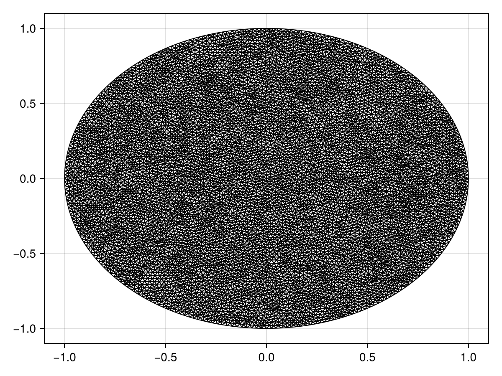

Reaction-Diffusion Equation with a Time-dependent Dirichlet Boundary Condition on a Disk
In this tutorial, we consider a reaction-diffusion equation on a disk with a boundary condition of the form $\mathrm du/\mathrm dt = u$:
\[\begin{equation*} \begin{aligned} \pdv{u(r, \theta, t)}{t} &= \div[u\grad u] + u(1-u) & 0<r<1,\,0<\theta<2\pi,\\[6pt] \dv{u(1, \theta, t)}{t} &= u(1,\theta,t) & 0<\theta<2\pi,\,t>0,\\[6pt] u(r,\theta,0) &= \sqrt{I_0(\sqrt{2}r)} & 0<r<1,\,0<\theta<2\pi, \end{aligned} \end{equation*}\]
where $I_0$ is the modified Bessel function of the first kind of order zero. For this problem the diffusion function is $D(\vb x, t, u) = u$ and the source function is $R(\vb x, t, u) = u(1-u)$, or equivalently the force function is
\[\vb q(\vb x, t, \alpha,\beta,\gamma) = \left(-\alpha(\alpha x + \beta y + \gamma), -\beta(\alpha x + \beta y + \gamma)\right)^{\mkern-1.5mu\mathsf{T}}.\]
As usual, we start by generating the mesh.
using FiniteVolumeMethod, DelaunayTriangulation, ElasticArrays
r = 1.0
circle = CircularArc((0.0, r), (0.0, r), (0.0, 0.0))
points = NTuple{2, Float64}[]
boundary_nodes = [circle]
tri = triangulate(points; boundary_nodes)
A = get_area(tri)
refine!(tri; max_area=1e-4A)
mesh = FVMGeometry(tri)FVMGeometry with 8902 control volumes, 17546 triangles, and 26447 edgesusing CairoMakie
triplot(tri)
Now we define the boundary conditions and the PDE.
using Bessels
BCs = BoundaryConditions(mesh, (x, y, t, u, p) -> u, Dudt)BoundaryConditions with 1 boundary condition with type Dudtf = (x, y) -> sqrt(besseli(0.0, sqrt(2) * sqrt(x^2 + y^2)))
D = (x, y, t, u, p) -> u
R = (x, y, t, u, p) -> u * (1 - u)
initial_condition = [f(x, y) for (x, y) in DelaunayTriangulation.each_point(tri)]
final_time = 0.10
prob = FVMProblem(mesh, BCs;
diffusion_function=D,
source_function=R,
final_time,
initial_condition)FVMProblem with 8902 nodes and time span (0.0, 0.1)We can now solve.
using OrdinaryDiffEq, LinearSolve
alg = FBDF(linsolve=UMFPACKFactorization(), autodiff=false)
sol = solve(prob, alg, saveat=0.01)retcode: Success
Interpolation: 1st order linear
t: 11-element Vector{Float64}:
0.0
0.01
0.02
0.03
0.04
0.05
0.06
0.07
0.08
0.09
0.1
u: 11-element Vector{Vector{Float64}}:
[1.2514323512504983, 1.2514323512504983, 1.2514323512504983, 1.2514323512504983, 1.2514323512504983, 1.2514323512504983, 1.2514323512504983, 1.2514323512504983, 1.0, 1.0732643239064652 … 1.1566436909339897, 1.2014405278115534, 1.1870916230780966, 1.1294300337297973, 1.2030191201186122, 1.0349689912480318, 1.0440606829859387, 1.0732376068604061, 1.1806716723293136, 1.1325634250422574]
[1.264010067471081, 1.264010067471081, 1.264010067471081, 1.264010067471081, 1.264010067471081, 1.264010067471081, 1.264010067471081, 1.264010067471081, 1.0100529497856383, 1.0840651191624577 … 1.1682903552743313, 1.213532195750249, 1.1990029650393788, 1.1407864149212144, 1.215110438385698, 1.0453771981828823, 1.054554591531211, 1.0840153232080212, 1.1925847527664766, 1.1439419564434778]
[1.2767133860706048, 1.2767133860706048, 1.2767133860706048, 1.2767133860706048, 1.2767133860706048, 1.2767133860706048, 1.2767133860706048, 1.2767133860706048, 1.020206127963589, 1.0949446526282811 … 1.1800120530404752, 1.2257171529674782, 1.2110770340420367, 1.1522516630911543, 1.2273288274776228, 1.0558832131037121, 1.0651530752241312, 1.0949229842191515, 1.2045261690880131, 1.1554428170025677]
[1.2895471262526785, 1.2895471262526785, 1.2895471262526785, 1.2895471262526785, 1.2895471262526785, 1.2895471262526785, 1.2895471262526785, 1.2895471262526785, 1.0304519123278484, 1.105952910430847 … 1.191870463298799, 1.2380557298793147, 1.223246866894104, 1.163825646816361, 1.2396523604380432, 1.0664770075405334, 1.0758679994963567, 1.1059077633143255, 1.2166427135871496, 1.1670490176299881]
[1.3025106935143071, 1.3025106935143071, 1.3025106935143071, 1.3025106935143071, 1.3025106935143071, 1.3025106935143071, 1.3025106935143071, 1.3025106935143071, 1.04082194443609, 1.1170652193717494 … 1.2038510573671186, 1.2504853695241465, 1.235552467788274, 1.1755344960864313, 1.2521282011739199, 1.0772185921496897, 1.0866779148249357, 1.1170479409071035, 1.2288566702465502, 1.1787884919787315]
[1.315601418378385, 1.315601418378385, 1.315601418378385, 1.315601418378385, 1.315601418378385, 1.315601418378385, 1.315601418378385, 1.315601418378385, 1.0512940351788895, 1.128329549178043 … 1.2159958969854903, 1.263039560314119, 1.2479657062148715, 1.1873723335044737, 1.264735948990439, 1.088072121105295, 1.0975928742781085, 1.1283034758685118, 1.2412575284368508, 1.1906705692760262]
[1.3288190597699554, 1.3288190597699554, 1.3288190597699554, 1.3288190597699554, 1.3288190597699554, 1.3288190597699554, 1.3288190597699554, 1.3288190597699554, 1.0619046240032677, 1.1398749339426881 … 1.2284688061715259, 1.2756878667049263, 1.2604525289206125, 1.1994165878994523, 1.2775535189084515, 1.0991298676610652, 1.108586808306767, 1.13975873142581, 1.254049354759423, 1.202799814370259]
[1.342166820228106, 1.342166820228106, 1.342166820228106, 1.342166820228106, 1.342166820228106, 1.342166820228106, 1.342166820228106, 1.342166820228106, 1.072633404294949, 1.1515878156143213 … 1.2411319381968728, 1.288450308904474, 1.2730467979819728, 1.211610048867801, 1.2905272725912966, 1.1103320485296624, 1.119679191638649, 1.1513585524529426, 1.2670532490139275, 1.2150903179677792]
[1.3556481563436356, 1.3556481563436356, 1.3556481563436356, 1.3556481563436356, 1.3556481563436356, 1.3556481563436356, 1.3556481563436356, 1.3556481563436356, 1.083444605679708, 1.163307914046501 … 1.253786950217194, 1.3013620050787755, 1.2857935382611418, 1.2238651948448054, 1.303572021064532, 1.1215807570459508, 1.1309006603535803, 1.1630120209355548, 1.280018084710702, 1.2274158752736952]
[1.3692665247073412, 1.3692665247073412, 1.3692665247073412, 1.3692665247073412, 1.3692665247073412, 1.3692665247073412, 1.3692665247073412, 1.3692665247073412, 1.0943024577833196, 1.1748749490927854 … 1.266235499388153, 1.3144580733938427, 1.2987377746203088, 1.2360945042657505, 1.3166025753537163, 1.132778086544796, 1.142281850531386, 1.174628218859292, 1.2926927353600852, 1.239650281493116]
[1.3830253819100216, 1.3830253819100216, 1.3830253819100216, 1.3830253819100216, 1.3830253819100216, 1.3830253819100216, 1.3830253819100216, 1.3830253819100216, 1.105171190231558, 1.1861286406067337 … 1.2782792428654133, 1.3277736320156885, 1.311924531921664, 1.248210455565922, 1.3295337464844064, 1.143826130361063, 1.1538533982518928, 1.1861162282098001, 1.304826074472415, 1.2516673318311502]fig = Figure(fontsize=38)
for (i, j) in zip(1:3, (1, 6, 11))
ax = Axis(fig[1, i], width=600, height=600,
xlabel="x", ylabel="y",
title="t = $(sol.t[j])",
titlealign=:left)
tricontourf!(ax, tri, sol.u[j], levels=1:0.01:1.4, colormap=:matter)
tightlimits!(ax)
end
resize_to_layout!(fig)
fig
!DelaunayTriangulation.has_vertex(tri, i) && continueJust the code
An uncommented version of this example is given below. You can view the source code for this file here.
using FiniteVolumeMethod, DelaunayTriangulation, ElasticArrays
r = 1.0
circle = CircularArc((0.0, r), (0.0, r), (0.0, 0.0))
points = NTuple{2, Float64}[]
boundary_nodes = [circle]
tri = triangulate(points; boundary_nodes)
A = get_area(tri)
refine!(tri; max_area=1e-4A)
mesh = FVMGeometry(tri)
using CairoMakie
triplot(tri)
using Bessels
BCs = BoundaryConditions(mesh, (x, y, t, u, p) -> u, Dudt)
f = (x, y) -> sqrt(besseli(0.0, sqrt(2) * sqrt(x^2 + y^2)))
D = (x, y, t, u, p) -> u
R = (x, y, t, u, p) -> u * (1 - u)
initial_condition = [f(x, y) for (x, y) in DelaunayTriangulation.each_point(tri)]
final_time = 0.10
prob = FVMProblem(mesh, BCs;
diffusion_function=D,
source_function=R,
final_time,
initial_condition)
using OrdinaryDiffEq, LinearSolve
alg = FBDF(linsolve=UMFPACKFactorization(), autodiff=false)
sol = solve(prob, alg, saveat=0.01)
fig = Figure(fontsize=38)
for (i, j) in zip(1:3, (1, 6, 11))
ax = Axis(fig[1, i], width=600, height=600,
xlabel="x", ylabel="y",
title="t = $(sol.t[j])",
titlealign=:left)
tricontourf!(ax, tri, sol.u[j], levels=1:0.01:1.4, colormap=:matter)
tightlimits!(ax)
end
resize_to_layout!(fig)
fig
!DelaunayTriangulation.has_vertex(tri, i) && continueThis page was generated using Literate.jl.